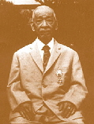
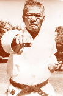
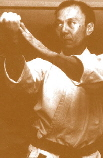
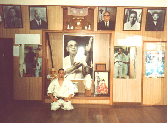

Presentación
| El Estilo Kyudokan | Arbol genealgico | La Familia Higa |




FUNDADOR: MAESTRO YUCHOKU HIGA 10 DAN (HANSHI) 10 aos Presidentede la Federacin de Karate-Do de Okinawa (Japn)

DISCPULO DEL GRAN MAESTRO CHIBANA CHOSHIN 10 DAN (HANSHI) (1884-1969) 1er. 10 DAN DEL MUNDO
INTRODUCTOR EN LA ARGENTINA MAESTRO JINTATSU HIGA 8 DAN (KYOSHI) (1912-1984)




JAPN: MINORU HIGA 9 DAN (HANSHI) Presidente de la Federacin Mundial

ITALIA: OSCAR HIGA 8 DAN (KYOSHI) Director Tcnico Mundial

BENITO HIGA 8 DAN (KYOSHI) Director para Sudamrica y Argentina

CRISTIAN LUGANI 2 DAN Representante para la Ciudad de Campana de la Escuela Shorinryu Kyudokan de Okinawa

[Presentacin] [Pensamiento] [Que es Karate] [Centro de Ens.] [Contacto] [Fotos]